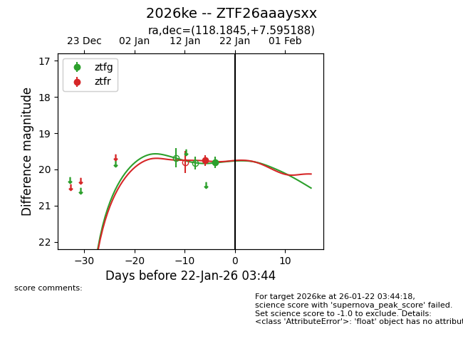
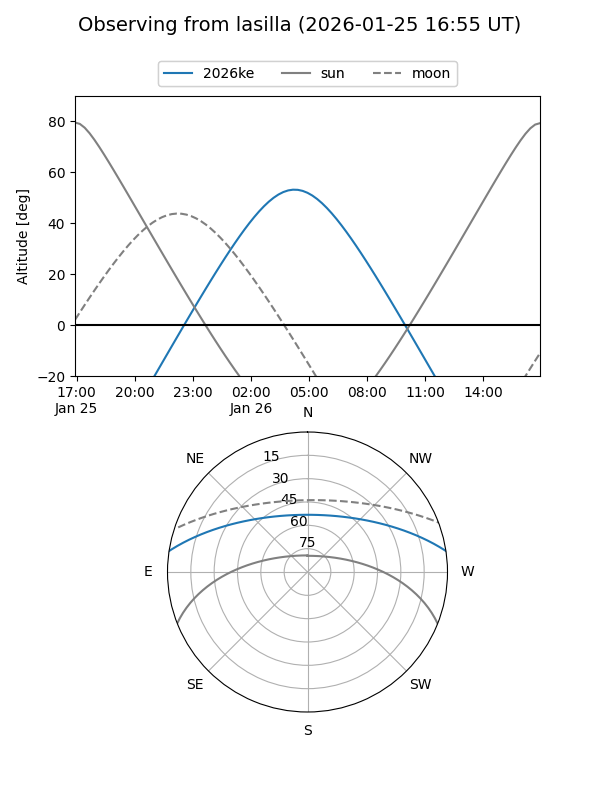
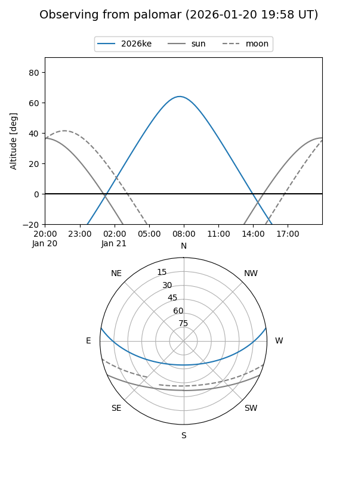
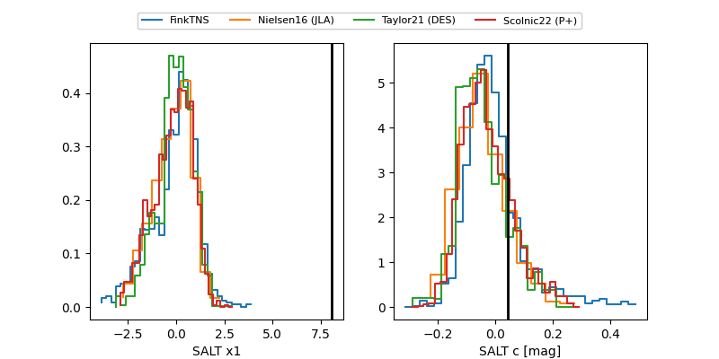

2026ke
Target 2026ke at 2026-01-20 03:06
Aliases and brokers:
FINK: link
Lasair: link
ALeRCE: link
TNS: link
YSE: link
alt names
ZTF26aaaysxx (ztf,fink_ztf)
2026ke (tns,yse)
Coordinates:
equatorial (ra, dec) = 118.1845,+7.59519
equatorial (HMS+DMS) = 07:52:44.28,+07:35:42.68
galactic (l, b) = (213.0412,+17.06305)
Flags:
Photometry:
last ztfg=19.81, ztfr=19.75
1 ztfg, 1 ztfr detections
Lightcurve

Visibility


Additional plots
